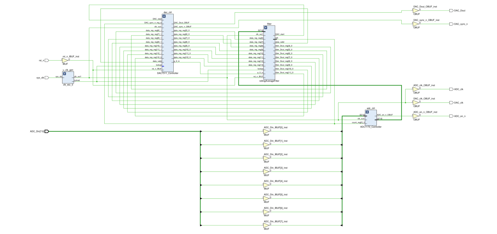
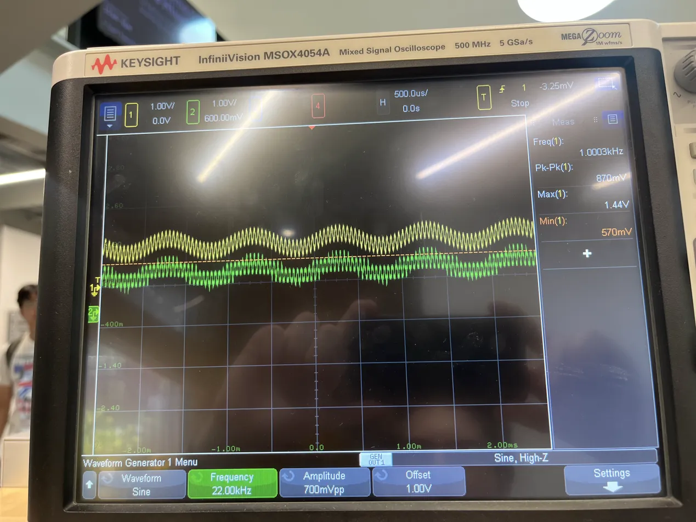
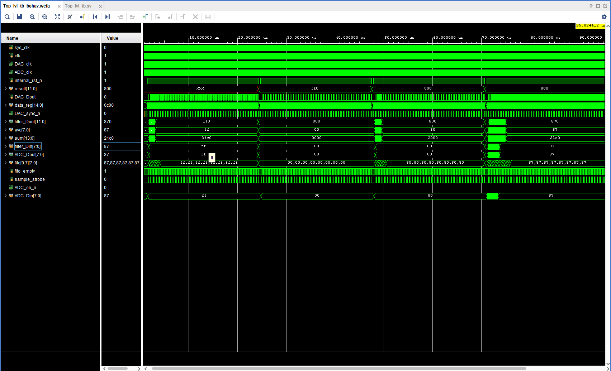

Rolling Average Filter: Digital Signal Processing Project
An ADC to DSP to DAC pipeline on a Spartan-7, filtering a live analog signal in real time and measured on a scope.
The goal of this project was to teach me how to use the Spartan accelerator board and the basics of digital signal processing. Throughout this process I was mentored and guided by my older brother who has graduated with a master's in Computer Engineering from NC State. But all work is my own, not skipping any parts as the whole goal of this was to learn and demonstrate understanding.
Before doing any code we started with an overview and a basic guideline planned out in Google Drawings. After that I worked on the ADC1173_controller and moved progressively across, from the ADC controller to the rolling filter to the DAC controller. Along the way I would commit and push and then my brother would review and explain why something isn't as optimal or secure as something else in a pull request, for example, switching from a circular buffer in the ADC1173_controller to a FIFO buffer. For better understanding of the dialogue, check the pull request history in the GitHub repository.
In addition, after every module, I would design and implement a test bench for that individual module to make sure it works as functions. Finally I joined together 2 signals in series for a mixed AC signal, connected that to the FPGA, ran the signal from the waveform generator through it and into an oscilloscope and it works as intended as shown at the end.

The ADC works as follows. A sample strobe running on a simple counter fires every 16 cycles, letting the ADC sample whatever signal is coming in (see Figure 1). The reason for the 16 cycles is because the DAC requires 16 to output and thus sampling any faster than that is unnecessary and can cause problem during testing. Additionally due to the Nyquist–Shannon sampling theorem, the fact that some signals are being skipped is okay or rather, intentional.
From there the data comes into a First In First Out buffer (FIFO buffer), that works by having two different addresses, a write and a read that 'chase' each other. Additionally there is a counter that keeps track of how many datasets are stored in the buffer and that keeps the FIFO safe in that if there is no data stored, it does not send any to the filter, and if the buffer it does not write the buffer. This keeps the addresses in line and prevents any skipping or causes them to get out of sync, see Figure 2 for the FIFO Buffer code.


The Filter is by far the simplest part of this ironically. First, it performs a handshake with the ADC letting it know that it needs data, and that the data from the ADC is valid. Then with the data from the ADC it shifts it upward in an array to make room for data coming in every cycle, and the new data overwrites the old after that data is 4 cycles old (see Figure 3). During this, through combinational logic it constantly adds up all the data into a sum, bit shifts it twice to the left to divide it by 4 to take the average and remove any noise.
Finally in a flip flop it bit shifts it by 4 to prepare the data for the DAC as it requires 12 bits (see Figure 4). Through keeping the data output in a FF we create a timing lock that ensures that no half calculated data is passed through to the DAC, this is part of the handshake with the DAC in order to let it know that the data is valid. The pictures below is for the 4-tap filter model, later I will show the 16-tap and 64-tap filter model and explain the difference and why it's an improvement.


The DAC is probably the most complex due to how it has to output values. First the data comes in through a handshake in that it accepts data if the DAC is not busy. This data is prepared in a variable data_reg in which it has 1 0 bit in front of the data from the filter and 2 1 bits as don't cares that signal the end of the cycle. Then as the sync goes down signifying that the DAC is busy, it also sends a 0 bit to the DAC. The reason for why we're sending 2 0 bits before the data is because those are control bits that let the DAC know we want to normal operation. Afterwards we simply cycle through data_reg, sending whatever the MSB in the reg is and then bit shifting for the next cycle. This continues for 16 cycles where sync returns to high and the DAC is ready for more data, see Figure 5 for DAC controller code.

With all this done, the only thing left to do is in person testing. The testing went as this: make a circuit that combines 2 AC signal, one 'noisy' higher signal, and one base signal (see Figure 6). Connect the signals to the FPGA. Then we should see the output signal appears smoother than the input, the frequency should match the base signal, and as you'll see in Figure 7, that is the case. Additionally as we increase the frequency of the higher signal, it will 'fade out' of the output signal and should start to become a 1-1 match to the input signal. The cutoff frequency (calculated from the sampling rate of the ADC1173 and number of taps) is around 346 kHz.
Now you'll notice in Figure 7, the output signal (green) is doing something called stepping, additionally can still see the jaggedness from noisy signal, this is due to the low number of taps. Thus a simple improvement we can do is increase the taps. Thus from here I improved the design.
I upgraded the design at first to a 16 tap version, then a 64 tap version, then an N tap version so that by changing a single variable you can decide the number of taps. According to the cutoff frequency formula, you can see that it scales inversely with N meaning the as N increases the cutoff frequency decreases linearly. Going from 346 kHz at 4 taps down to a tested 21.6 kHz at 64 taps.



As shown in the photos above the attunement to the yellow signal is significantly greater, additionally you can see that voltage drop is around 67% which corresponds with −3 dB, exactly the result expected. Furthermore as the design is now N type it is highly customizable to the user and even increase even more. The maximum viable N count is unknown to me, as that would require further testing that doesn't so much contribute to my understanding and learning from this project. Thank you for taking time to join me on this journey!
7.1 Modules
| ADC1173_Controller | Captures 8-bit parallel samples every 16 clock cycles into an 8-entry FIFO. Drives ADC_clk and ADC_en_n. |
| rollingAverageFilter | Shift register of N samples, running sum, 12-bit average scaled to the DAC's range. |
| DAC7311_Controller | Three-state FSM. Serializes a 16-bit SPI frame MSB first with SYNC framing at 50 MHz. |
| top_lvl | Wires the submodules, divides the 100 MHz oscillator to 50 MHz, gates reset with the PLL lock. |
7.2 Tap count and cutoff frequency
y[n] = (1/N) × Σ x[n-k] f_c = 0.443 × f_sample / N
| Taps | Sample rate | Cutoff |
|---|---|---|
| 4 | 3.125 MHz | ~346 kHz |
| 8 | 3.125 MHz | ~173 kHz |
| 16 | 3.125 MHz | ~86 kHz |
| 32 | 3.125 MHz | ~43 kHz |
| 64 | 3.125 MHz | ~21.6 kHz |
7.3 Utilization and timing, 64-tap build
| LUTs | 368 · 5% |
| Flip-flops | 629 · 4% |
| DSP slices | 0 · built in fabric logic on purpose |
| I/O pins | 15 · 15% |
| Worst negative slack | 6.574 ns on a 20 ns period |
| Effective sample rate | 3.125 MSPS |
| Pipeline latency | ~23.04 µs at N = 64 |
Going from 4 to 64 taps raised flip-flop use linearly for the shift register but barely moved LUT count for the accumulator. The design is flip-flop limited, so the fabric ceiling is somewhere near 2,000 taps.
7.4 Assertions in the top-level testbench
| ADC_Write_Check | FIFO write data matches the ADC input |
| ADC_Read_Check | FIFO read data matches the stored sample |
| filter_calculation_check | Filter output matches the expected rolling average |
| DAC_sync_check | SYNC drops one cycle after valid data |
| DAC_start_bit_check | The first transmitted bit is correct |
| DAC_shift_reg_check | The shift register advances each cycle |

7.5 Hardware and pin assignments
| FPGA board | Spartan Edge Accelerator, XC7S15-1FTGB196C |
| ADC | ADC1173, 8-bit parallel, onboard |
| DAC | DAC7311IDCKR, 12-bit SPI, onboard |
| Oscilloscope | Keysight DSOX3014A |
| Waveform generator | Keysight 33500B |
| ADC_Din[7:0] | H12 / H11 / C11 / F12 / E12 / D12 / J2 / J3 |
| DAC_Dout · sync_n · clk | L1 · N1 · M1 |